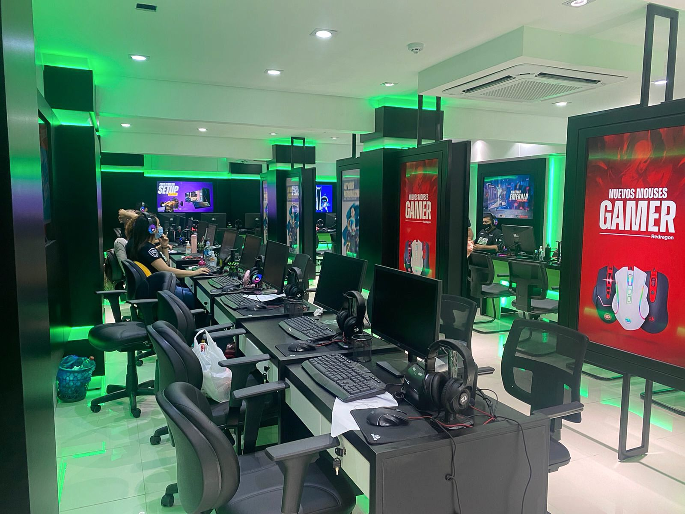
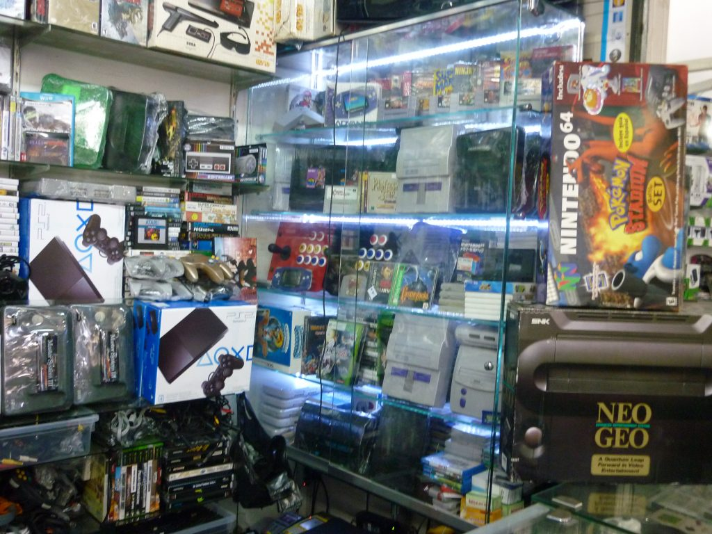

RPG GAMES
Página InicialNossos Produtos
Contato
Embarque conosco em uma jornada fascinante pelo universo dos videogames e dos jogos antigos na RPG Games, onde a paixão pelo gaming se encontra com a história rica e diversificada dos jogos eletrônicos. Fundada em 2003 por um grupo de entusiastas que compartilhavam uma devoção fervorosa pelos videogames, a RPG Games rapidamente se transformou em um ponto de referência para gamers de todas as idades. Desde a sua modesta origem como uma pequena loja local, até a expansão que a levou a atender clientes em todo o país, nossa loja tem sido um local de encontro para aqueles que compartilham o amor pelos jogos eletrônicos.
Nosso espaço é mais do que uma simples loja: é um santuário para os amantes de jogos, um local onde a nostalgia encontra a inovação e onde as histórias dos videogames se entrelaçam com as memórias dos jogadores. Ao entrar na RPG Games, você será recebido por uma atmosfera calorosa e acolhedora, permeada pelo zumbido elétrico de consoles modernos e pelo charme clássico dos jogos retro. Nossas prateleiras estão repletas de tesouros, desde os últimos lançamentos que capturam a imaginação dos jogadores contemporâneos até os clássicos atemporais que evocam sentimentos de nostalgia e saudade.
Na RPG Games, valorizamos não apenas os produtos que vendemos, mas também a experiência que proporcionamos aos nossos clientes. Nossos funcionários são verdadeiros conhecedores, apaixonados por compartilhar seus conhecimentos sobre os jogos e ajudar os clientes a encontrarem exatamente o que estão procurando. Além disso, organizamos eventos regulares, como torneios, lançamentos de jogos e noites temáticas, que transformam nossa loja em um centro vibrante de atividade para a comunidade gamer local.
O nosso compromisso vai além de oferecer uma ampla seleção de produtos de alta qualidade; nós celebramos a diversidade dos jogos e dos jogadores. A RPG Games é um espaço inclusivo, onde jogadores de todas as origens são bem-vindos para se conectarem, compartilharem histórias e celebrarem a paixão que todos nós compartilhamos: os videogames.
Ao longo dos anos, construímos uma comunidade sólida de clientes, colaboradores e parceiros.
